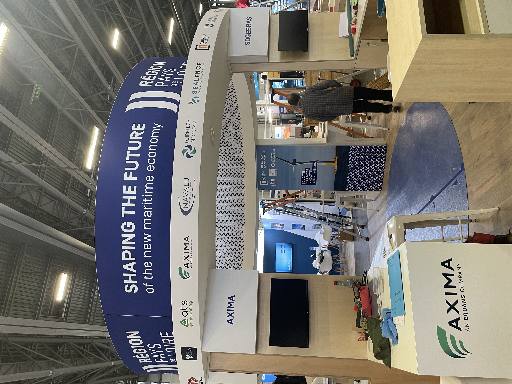
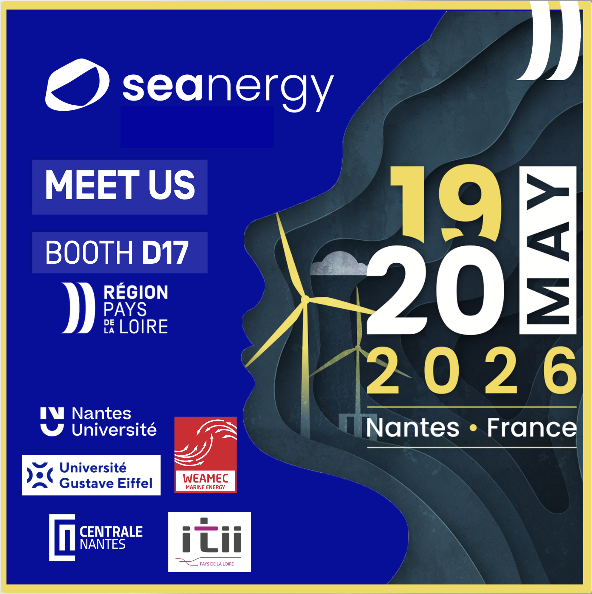
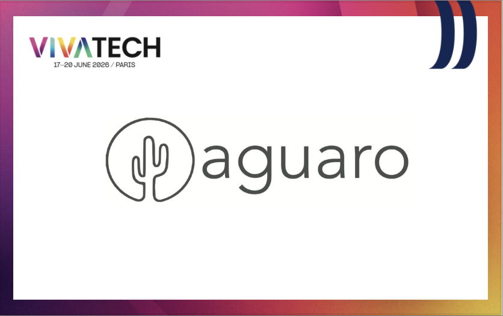
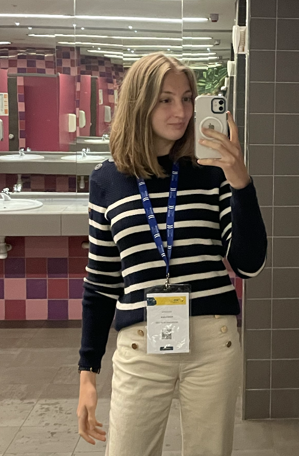
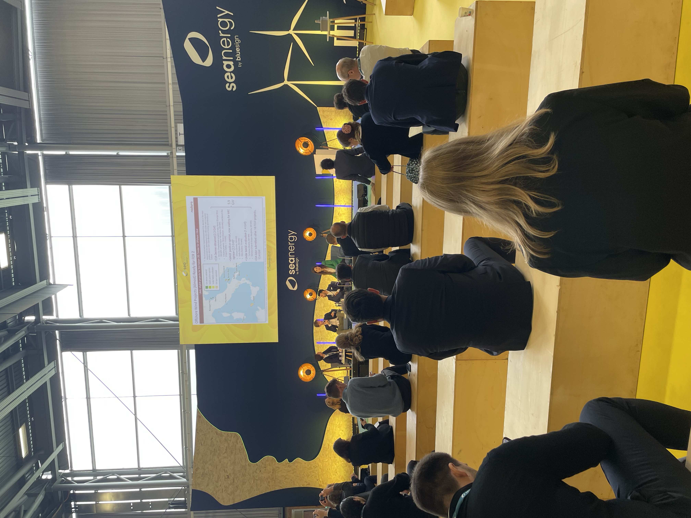
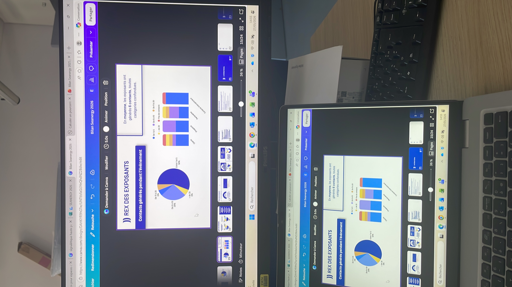
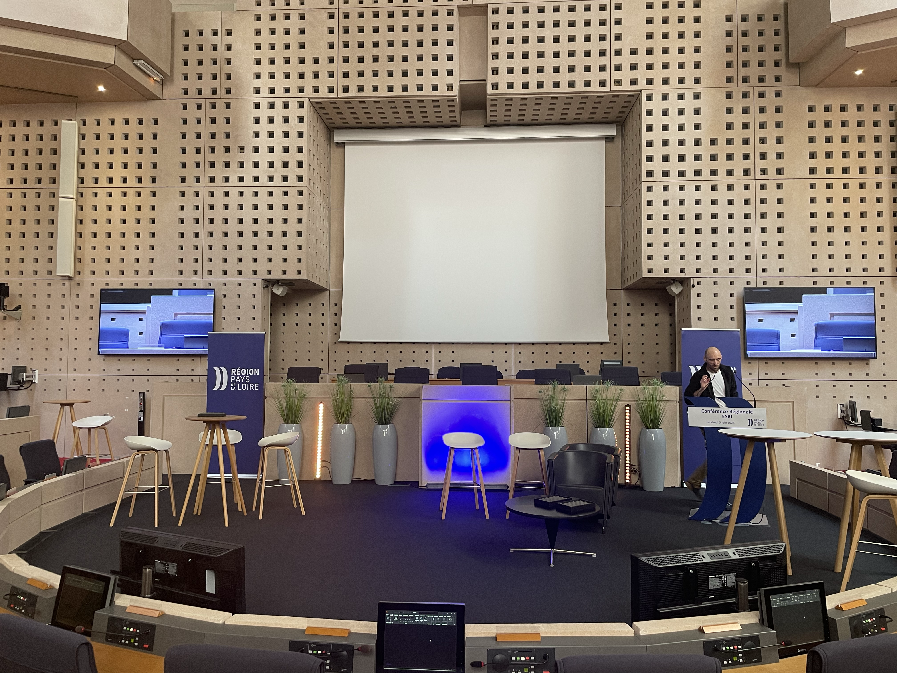
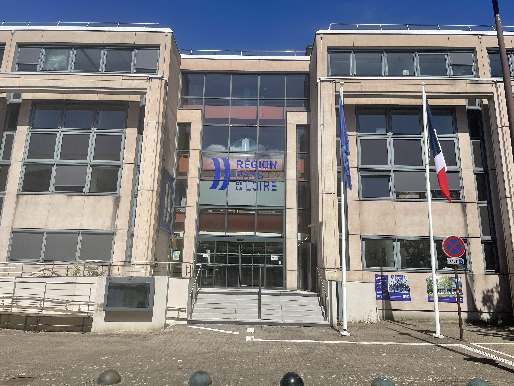

LES COULISSES
Ce que j'ai créé, préparé et découvert.
Derrière chaque événement, il y a des semaines de préparation, des supports à créer, des détails à anticiper… et quelques moments qui n'étaient pas prévus au programme.
01 — RÉALISATIONS
Ce que j'ai créé
Quelques-uns des supports que j'ai conçus ou auxquels j'ai participé pendant mon stage.
SEANERGY
Préparer un salon professionnel

Le Pavillon Pays de la Loire
Le stand régional pendant le salon Seanergy.
Catalogue Seanergy
Création et mise en forme du catalogue.
Planning des temps forts
Organisation des animations du Pavillon.

Kit de communication
Création de supports destinés aux exposants.
VIVATECH
Préparer la présence régionale
Carnet des startups
Support préparé pour accompagner la présence régionale à VivaTech.

Kit de communication
Supports destinés aux exposants.
Étiquettes exposants
Création des étiquettes personnalisées avec les logos des entreprises.
AUTRES PROJETS
Des missions aux formats variés
Catalogue Agro Connect
Création complète du catalogue.
Rencontres des maires
Flyer d'information destiné aux habitants.
Salon du Bourget
Support de prospection.
02 — SUR LE TERRAIN
Ce que j'ai vécu
Parce qu'un stage ne se résume pas aux fichiers ouverts sur un ordinateur.





03 — ENTRE DEUX PROJETS
Et aussi...
Parce qu'un stage, c'est aussi les moments partagés avec les collègues.

Une sortie à vélo avec l'équipe 🚲

Un anniversaire au bureau 🎂